Spoiler
Tu Z2 del Garmin no es tu Z2.
220 − edadFC máx. realZonas
Si no le has dicho tu máximo
220 − edad
Es la fórmula que usa para calcular tu pulso máximo y, con él, todas tus zonas.
Puede fallar ±10 lpm
Mismo cuerpo, otras zonas.
Fórmula
45 años · 220 − 45
175 lpm
Tu máximo real
el más alto en carrera
190 lpm
Zona 2 = 60–70 % de la FC máx. · Datos de ejemplo
Tu Z2 real empieza más arriba.
Con la fórmula, tu rodaje suave puede quedarse corto. O pasarse, si tu máximo es más bajo.
Qué hacer
Revisa tu máximo.
01
Ajustes → Zonas de frecuencia cardiaca
02
Mira qué pulso máximo tiene puesto¿220 − tu edad? Entonces es la fórmula.
03
Pon el más alto que hayas vistoen una carrera reciente, o deja que lo detecte solo.

Runch
Guárdalo para tu próximo rodaje.
Segueix-nos: @runch.run
Runch
Spoiler
Tu Z2 del Garmin no es tu Z2.
220 − edadFC máx. real
@runch.run